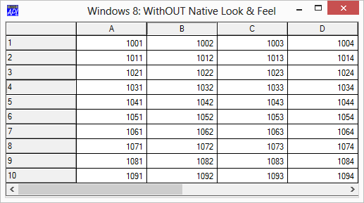
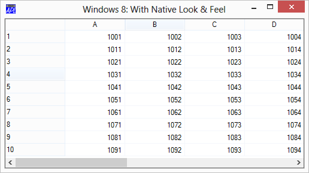
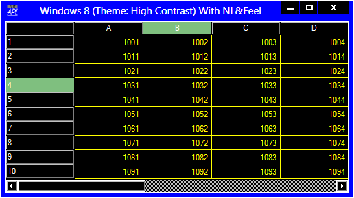

In order to make it more consistent with current Windows conventions, the default appearance of the Grid now respects the user's chosen theme when Native Look and Feel is enabled. In particular, the default colour of the grid lines and the shading of the row and column headings is determined by the user's theme.
This change applies to all supported Versions of Windows except Windows XP.

Windows 8 default theme, Native Look and Feel NOT enabled.

Windows 8 default Theme, Native Look and Feel enabled.
The change is more noticeable when a more colourful Theme is in use. The following pictures illustrate a Grid with and without Native Look and Feel when a Windows 8 High Contrast Theme is used.
Windows 8 High Contrast Theme, Native Look and Feel NOT enabled.

Windows 8 High Contrast Theme, Native Look and Feel enabled.
If Native Look and Feel is enabled, the values of the GridFCol, RowTitleFCol and ColTitleFCol properties are ignored in deference to the colours defined by the chosen theme. You may however override the theme derived colours of the grid lines using GridLineFCol.